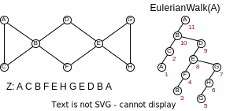
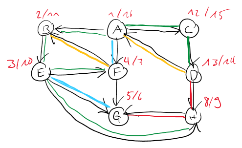
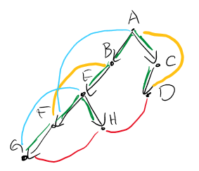
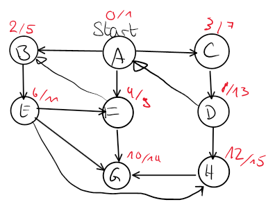
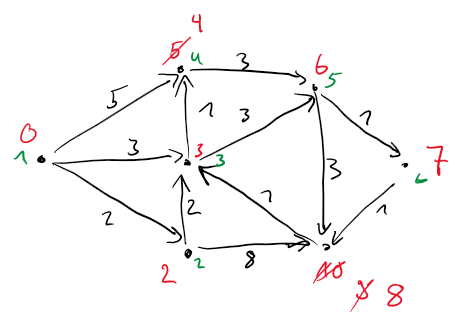
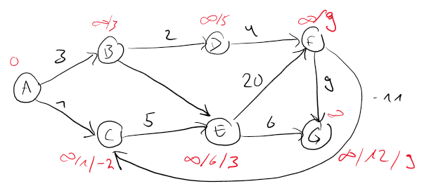

Graph theory
A graph \(G\) is a set of vertices \(V\) and edges \(E\) where an edge is defined as an unordered pair of vertices \(e = uv\) with \(u \neq v\). Directed graphs are quite similar, but edges are defined as ordered pairs.
Definitions
Vertices:
- Vertex degree \(\text{deg}(u)\): Number of adjacent vertices. In a directed graph, this is further split into \(\text{deg}_{in}\) (number of incoming edges) and \(\text{deg}_{out}\) (outgoing edges)
- Source (Quelle): Vertex with \(\text{deg}_{in} = 0\)
- Sink (Senke): Vertex with \(\text{deg}_{out} = 0\) (exists, if the graph is acyclic)
- Leaf: Vertex with \(\text{deg}(u) = 1\)
- Adjacent (Adjazent, benachbart): two vertices directly connected through an edge
- Incident (Inzident, angliegen): edges connected to a vertex
- \(u\) reaches \(v\): There exists a path from \(u\) to \(v\)
- Strongly connected (in directed graphs): both edges \(uv\) and \(vu\) exist
Graphs:
- Complete graph: all vertices are pairwise adjacent
- Transitive graph: for any two edges \(uv\) and \(vw\), the edge \(uw\) also exists
- Connected component (Zusammenhangskomponente ZHK): biggest possible subgraph where there exists a walk between every pair of vertices.
- Connected graph (zusammenhängend): Graph with exactly one connected component
- Tree: connected graph without cycles. A tree with \(n\) vertices has \(n-1\) edges
- Multi-graph: edges are allowed to be duplicated
Walks:
- Walk (Weg): sequence of adjacent vertices with two endpoints where the length is defined as the number of vertices on the walk
- Closed Walk (Zyklus): walk with identical first and last vertex
- Path (Pfad): walk without repeating vertex
- Cycle (Kreis): path with identical first and last vertex
Special walks:
- Eulerian walk: walk using every edge exactly once. Exists if at most two vertices have an odd degree.
- Eulerian closed walk: closed walk using every edge exactly once. Exists if all edges have an even degree, and only one ZHK exists.
- Hamiltonian path: path visiting every vertex exactly once. A graph with a Hamiltonian path also has an Eulerian walk.
- Hamiltonian cycle: cycle visiting every vertex exactly once.
Finding Eulerian walk
We define the algorithm Walk(u) that finds a walk in a graph with starting vertex \(u\) where each edge is used at
most once, and all edges incident to the final node were used.
1 2 3 4 | |
This algorithm has the invariant: number of unmarked edges incident to \(v\) is even. If the invariant is valid before the execution of \(Walk(v)\), it is also valid afterward. Actually, if it is valid before the execution, the algorithm will find a closed walk.
By slightly modifying this algorithm, we are able to use it to find an Eulerian walk. We put every vertex into a global
list z after it has been fully processed (has no more unmarked incident edges). The marking is also global.
1 2 3 4 5 | |
By executing the above algorithm on any node in the graph, we can find an Eulerian cycle in \(z\) IFF the graph is connected, and all vertex degrees are even. See the following example.

Storing a graph in memory
An adjacency matrix stores the edges in a square matrix of size \(|V|^2\). Due to its size, it is often considered inefficient, as most of the cells will be empty (set to \(0\)), except if \(|E| \geq \Omega(|V|^2)\).
The adjacency list is a list of vertices, where for each vertex a linked list of nodes is stored. This linked list represents all the adjacent vertices.
The improved adjacency list stores some additional data: for each vertex, we know the vertex degree, and identical edges in the adjacency list are linked together.
Topological order
The topological order is a special order of the vertices of a directed acyclic graph (DAG, a directed graph without cycles). Such an order is not necessarily unique.
Search algorithms
To find a topological order, we follow the steps below:
- Find a sink \(v\)
- \(v\) is the last element in the topological order
- Remove \(v\) and call this algorithm recursively
To find a sink in the graph, we use the following algorithm on an arbitrary vertex. The last vertex in the path is a sink.
1 2 3 4 | |
Depth first search (DFS)
To find a complete topological order of a graph, we can use a so-called depth first search. The algorithm is called on any vertex of the graph, giving us a pre- and post-numper. It is called depth first, because the algorithm first explores a final vertex in the path and then goes up one level to continue searching.
1 2 3 4 5 6 7 8 9 | |
If this algorithm is called on the root of the topological order, this results in a DFS-tree, otherwise in a DFS-forest. The reverse post-order results in the topological order (if we have a DAG).
In the following example, the algorithm is executed on a graph with cycles. In red, we have the pre- and post-number.

The pre- and post-number of a vertex \(u\) creates the interval \(I_u\)
The edges are colored as follows:
- Green: tree edge - edge building up the DFS-tree
- Yellow: backward edge - remaining edges \(uv\) where \(I_v\) completely contains \(I_u\)
- Blue: forward edge - remaining edges \(uv\) where \(I_u\) completely contains \(I_v\)
- Red: cross edge: - remaining edges \(uv\) where \(I_u\) is entirely in front of \(I_v\)
This allows us to build a recursion tree/DFS-tree:

If a graph has a backward edge, it follows that the graph has a cycle. And thus no topological order exists.
DFS can also be executed on undirected graphs, with the following properties:
- forward edge = backward edge
- cross edges do not exist.
Shortest path
In graphs, we are searching for shortest paths between two vertices. This must always be a path, as visiting a vertex twice would unnecessarily add more edges to cross. Each edge is weighted, and these weights can also be negative.
- Path cost (Wegkosten) \(c(W)\): sum of the edge weights
- Distance \(d(u,v) = \text{min}\{c(W) \mid \text{W is walk from } u \text{ to } v\}\)
- \(d(u,v) \leq d(u, w) + d(w,v)\)
Once the shortest paths towards all vertices was found, the shortest-path-tree can be constructed, spanning up a tree where a path from the starting vertex to all other vertices exists.
The following chapters will look at five algorithms that can be used in different use cases to find shortest paths.
| Edge costs | Algorith | Running time |
|---|---|---|
| \(c(e)=1\) | BFS | \(O(m+n)\) |
| \(c(e)\geq 0\) | Dijkstra | \(O((m+n) log(n))\)1 |
| \(c(e) \in \mathbb{R}\) | Bellman-Ford2 | \(O(m \cdot n)\) |
| Edge costs | Algorith | Running time |
|---|---|---|
| \(c(e)=1\) | \(n \times\) BFS | \(O((m+n) \cdot n)\) |
| \(c(e)\geq 0\) | \(n \times\) Dijkstra | \(O((m+n) log(n) \cdot n)\)1 |
| \(c(e) \in \mathbb{R}\) | \(n \times\) Bellman-Ford2 | \(O(m \cdot n^2)\) |
| \(c(e) \in \mathbb{R}\) | Floyd-Warhsall | \(O(n^3)\) |
| \(c(e) \in \mathbb{R}\) | Johnson | \(O(n (m + n) log(n))\) |
Breadth first search (BFS)
The breadth first search algorithm can be used to find the shortest path in an unweighted graph, where only the number of crossed vertices are counted. It is called breadth first, as each vertex is fully processed, before going a level further. This is achieved using a queue. Actually, this algorithm not only computes the distance between two vertices, but between a starting vertex and all other connected vertices.
1 2 3 4 5 6 7 8 9 10 11 12 13 | |
The algorithm keeps track on what steps a vertex is started to being processed, and when it is finished. Additionally, it computes the distances to each vertex, and adds adjacent vertices to the list of vertices to process. Executed on the vertex A in the graph below, the shown enter and leave numbers result.

Dijkstra (non-negative edges)
To find the shortest paths in graphs without negative weighted edges, the Dijkstra algorithm can be applied. In general, this algorithm sorts the vertices by distance to the starting vertex \(s\). We use the following recursion:
The algorithm keeps track of upper bounds distances to the starting vertex, until all vertices were processed at which point we have the shortest path distances in the array \(d\).
1 2 3 4 5 6 7 8 9 10 11 12 13 | |
In the following figure, the algorithm is run on a given graph. In red, we see the evolution of the costs, and in green the order of processing.

Bellman-Ford (negative edges)
The Bellman-Ford algorithm finds shortest paths in a graph without negative cycles. The principle of this algorithm is to have \(l\)-precise bounds - bounds that are only exact for the first \(l\) vertices in the shortest-path-tree. These bounds are iteratively improved, until the costs do no longer change, which is after \((n-1)\) runs at the latest. The recursion of this algorithm is defined as:
1 2 3 4 5 6 7 8 | |
This algorithm can be seen in below graph where the red values show how the costs evolve.

| A | B | C | D | E | F | G |
|---|---|---|---|---|---|---|
| 0 | \(\infty\) | \(\infty\) | \(\infty\) | \(\infty\) | \(\infty\) | \(\infty\) |
| 0 | 3 | 1 | 5 | 6 | 9 | 12 |
| 0 | 3 | -2 | 5 | 3 | 9 | 9 |
Finding negative cycles
As soon as an algorithm has negative cycles, there is the potential to have negative cycles. To find if such a cycle exists, we simply execute the Bellman-Ford algorithm. If a negative cycle exists, the algorithm will never terminate as the weights become smaller in each iteration.
Floyd-Warshall
Johnson
Minimum spanning tree (MST)
A Spanning tree is a connected subgraph with minimum weights. To find such a tree we can look for the minimum edge incident to each vertex and add it to the MST. This, however, most certainly leaves us with a forest instead of a tree - we now have a series of connected components. To connect the forest into a single tree, we repeatedly add the minimum weight edge on each ZHK to the MST.
While the MST results in the minimum graph weight, it should not be confused with an alternative to find the shortest paths.
Uniqueness
In graphs with unique weights, the MST is always unique.
Algorithms
The following chapters describe three algorithms that search for the MST.
| Algorithm | Running tim |
|---|---|
| Boruvka | \(O((n + m) \cdot log(n))\) |
| Prim | \(O((n + m) \cdot log(n))\) |
Boruvka
This first algorithm was already described in the introduction to the MSTs. The following pseudocode describes it in more details. In the first iteration, every vertex is its own ZHK. One iteration of the loop has a duration of \(O (n+m)\), and it is executed \(log(n)\)-times, as after each iteration, the number of ZHKs is halved.
1 2 3 4 5 6 7 | |
Prim
Prim's algorithm is quite similar but here we look at one vertex after the other. Some starting vertex represents the first ZHK, which is getting extended after each iteration until the spanning-tree is complete. In each iteration, the minimum weighted edge incident to the ZHK is added.
1 2 3 4 5 6 7 8 9 10 11 12 13 14 15 | |
Kruskal
Layered graphs
Sometimes, it is beneficial to modify a given graph for an improved algorithm performance. An approach that is often taken is to create multiple layers of the same graph, where the layers serve as a sort of memory. An example for such a problem is finding the shortest path in a graph where \(k\) cheats are allowed. A cheat is defined as essentially setting the weight of an edge to \(0\).
To solve this problem, our modified graph \(G'\) contains \(k+1\) copies of the original graph (including all edges). Next, we add the edges such that for every edge \(uv \in E\), we add the edge \(u_iu_{i+1}\) with a weight of \(c(u_i,u_{i+1}) = 0\). Now, as long as we are in the first layer, we have cheated on \(0\) edges. Once we pass a layer down, we have cheated on one additional layer.
The problem in this modified graph \(G'\) is now to find the shortest path between \(s_0\) and \(d_k\).